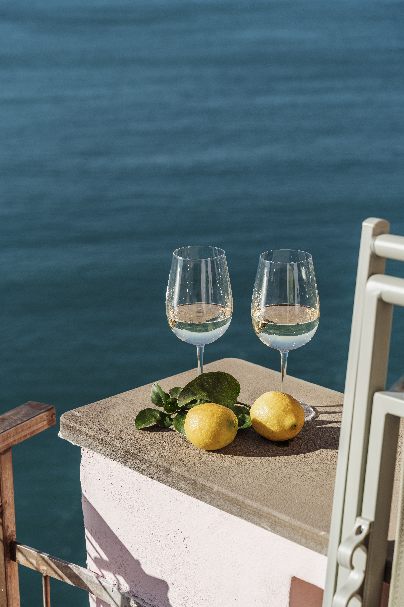
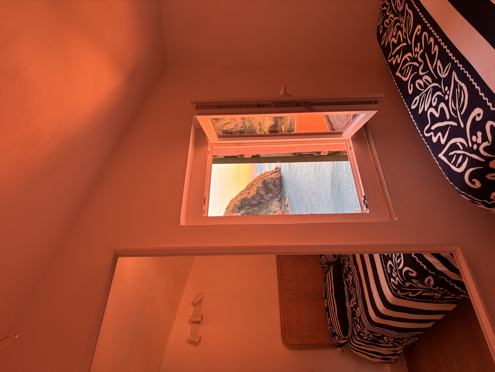
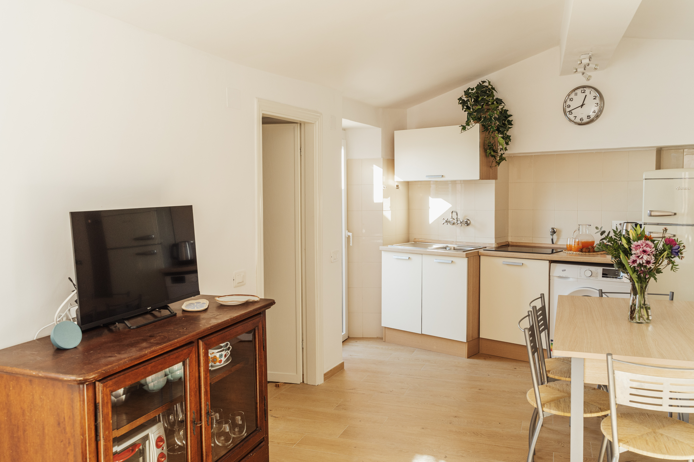
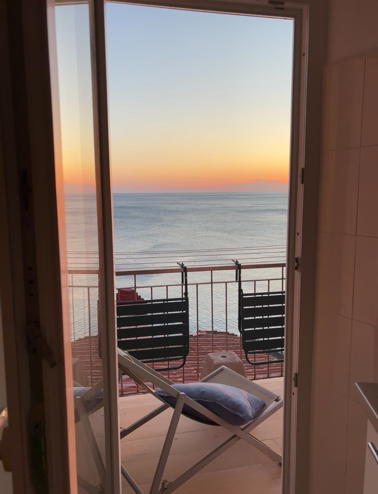
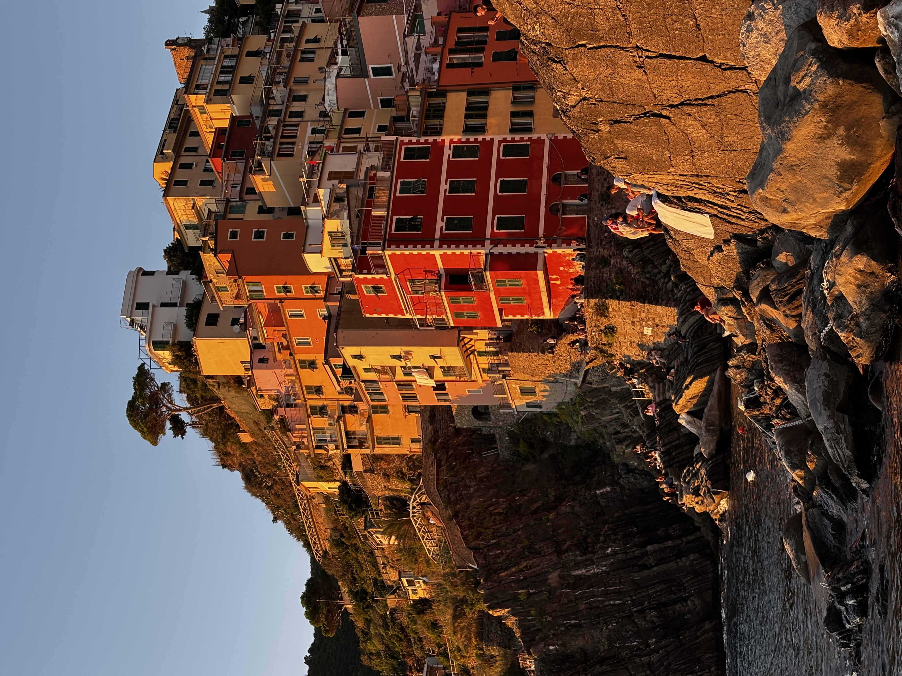

Galleria Foto








Un rifugio esclusivo nel cuore di Riomaggiore, dove il mare diventa parte della vostra casa.
Dal balcone privato potrete regalarvi ogni sera tramonti indimenticabili e la magia della Via dell'Amore illuminata. Al mattino concedetevi una colazione lenta e silenziosa, guardando le prime barche passare proprio sotto di voi.
La posizione è perfetta per scoprire le Cinque Terre a piedi e immergervi nell'autentica atmosfera del borgo ligure.
Prenota il tuo soggiorno:
Gaia Retreat Apartment




Scopri le migliori esperienze culinarie nelle Cinque Terre
I mesi primaverili e di fine estate offrono il clima migliore e meno affollamento
Scarpe comode, crema solare, borraccia e una giacca leggera per le serate
La Cinque Terre Card include tutti i treni e autobus. Non è necessaria un'auto, che sconsigliamo per raggiungere le Cinque Terre
Trofie al pesto, spaghetti ai frutti di mare e focaccia sono i piatti must-try
I sentieri sono ben segnalati. Inizia presto per evitare le folle e il caldo
I migliori tramonti si vedono dal nostro balcone privato e dalla Via dell'Amore, così come le stelle nelle belle serate estive
Leggi le esperienze di chi ha visitato Gaia Retreat
"We had a great week at Giovanni & Gaia's place. Gaia was an amazing host, very friendly and easy to communicate with. She did everything to ensure we enjoyed our stay to the fullest. The location matches the photos and more. It's a peaceful place in a very culturally rich town. We loved everything about it."
"Gaia’s retreat was absolutely beautiful, and perfect for our stay in Riomaggiore. The view was stunning and the apartment very easy to reach. Great amenities and very clean. The inclusion of a lift pass in the booking was super helpful as we had a lot of luggage. Would absolutely recommend this apartment to everyone!"
"Absolutely amazing location with incredible views, I would stay here again in a heartbeat. Place is simple and clean, with amenities. Great access to the center of Riomaggiore without being loud at night or a long walk. Host also had amazing suggestions and we went to their referred restaurant 3 times."